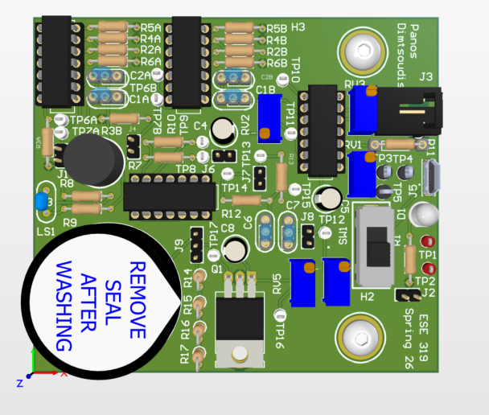
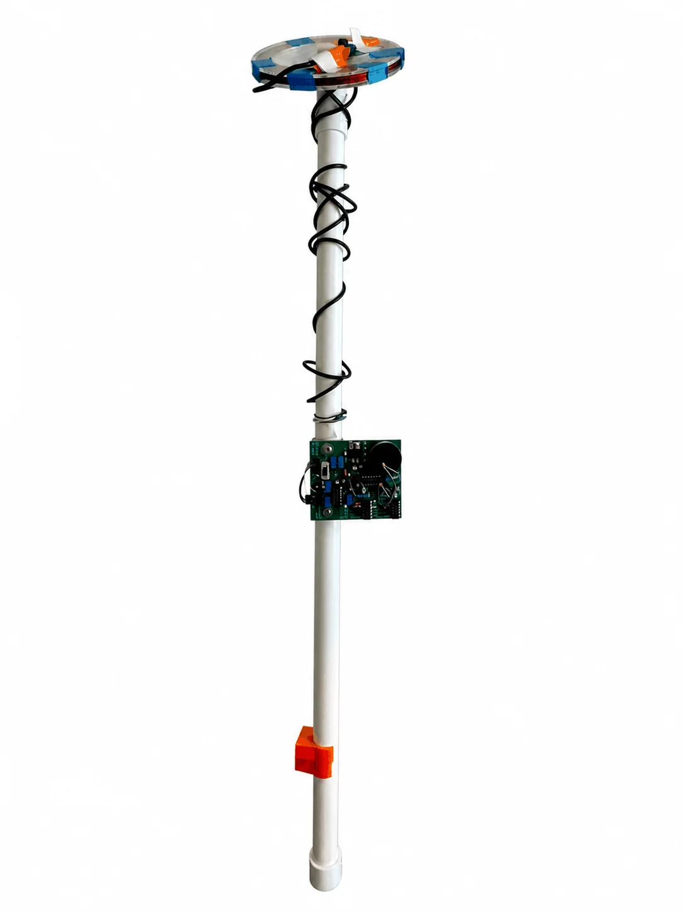

Metal Detector PCB
PCB design · analog circuits
An oscillator-based metal detector circuit turned into a fabricated PCB, built from ALD1103 MOSFETs with two LC oscillators, a mixer, and an RC low-pass filter. I assembled the board and debugged it stage by stage; the fixed oscillator measured 50.2 kHz against 50.27 kHz in LTspice.

Overview
Two LC oscillators built from ALD1103 MOSFETs, one fixed and one tuned by the search coil, are mixed down to an audio-rate beat note and low-pass filtered to drive a speaker. A nearby metal object pulls the search coil's inductance, the beat frequency shifts, and the tone changes. This project took that circuit all the way to a fabricated board.
Results
| Quantity | Value | Condition |
|---|---|---|
| Fixed oscillator | LTspice | Simulated against measured on the assembled board, 0.14% apart |
| Search-coil oscillator | LTspice | Simulated against measured, 1.8% low |
| Output | Beat note | Measured on the assembled board into an 8 Ω speaker |
| Board | 2 layers | Routed in Altium, hand-soldered, test points on every stage |
Design process
- Took the schematic to a two-layer board in Altium, with test points left on each stage so the oscillators, the mixer and the filter could be probed separately.
- Kept the two oscillators apart on the board, so the fixed one could not pull the search-coil one into lock and kill the beat note.
- Hand-soldered and inspected the fabricated board, then brought it up stage by stage instead of powering the whole thing at once.
- Probed each stage against LTspice: the fixed oscillator measured 50.2 kHz against 50.27 kHz simulated, 0.14% off.
The built detector

Technical report
The technical report is embedded below and can be scrolled directly on this page. Use the button beneath it to open the PDF in a separate window.